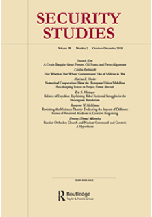

收录于合集 #新刊速递 123个
期刊简介
 《安全研究》收录出版创新性的学术稿件——无论是理论研究、实践经验分享还是两者兼而有之。安全研究包含广泛的议题，从核扩散、核威慑、军民关系、战略文化、种族冲突、流行病与国家安全、民主政治、外交决策到定性与多方法研究的发展。根据2018年的Journal Citation Reports显示，其2018年的影响因子为1.706，在91种国际关系类期刊中排名第30（30/91）。
本期编委
编译：周雨橙，施榕，许文婷，李玉婷，周玫琳
校对：扎西旺姆
审核：周玫琳
排版：吴俣
本期目录
1.Hatchet or Scalpel? Domestic Politics, International Threats, and US Military Spending Cuts, 1950–2014
斧头还是手术刀？国内政治、国际威胁和美国军事开支的削减（1950-2014）
2.The Sturdy Child vs. the Sword of Damocles: Nuclear Weapons and the Expected Cost of War
健壮的孩子对达摩克斯之剑：核武器与战争的预期成本
3.Frustration and Delay: The Secondary Effects of Supply-Side Proliferation Controls
沮丧和延迟：供给侧核扩散控制的次级效应
4.Neutrality Regimes
中立机制
5.Public Goods, Club Goods, and Private Interests: The Influence of Domestic Business Elites on British Counter-Piracy Interventions in the South China Sea, 1921–35
公共产品、俱乐部产品和私人利益: 1921-1935年英国国内商业精英对南海反海盗干预活动的影响
摘要译文 1.
斧头还是手术刀？国内政治、国际威胁和美国军事开支的削减（1950-2014）
【题目】 Hatchet or Scalpel? Domestic Politics, International Threats, and US Military Spending Cuts, 1950–2014
【作者】 Rosella Cappella Zielinski，波士顿大学政治学系助理教授。
Kaija Schilde，波士顿大学弗雷德里克·帕迪全球研究学院副教授。 【摘要】 与增加预算相比，削减预算具有明显的政治、组织和心理动因。理想情况下，政策制定者对可能的战略挑战划分等级、确定优先顺序和进行评估，以确定适合从中削减开支的办事处、项目、明细或服务分支机构。在艾森豪威尔、肯尼迪、福特和克林顿政府时期，实行的是有针对性的削减政策，即保留部分明细或服务的同时削减其他项目。相比之下，尼克松、老布什和奥巴马政府都实行了全面削减政策，影响了所有领域的预算，而不顾及各领域的战略优先等级。作者认为行政部门根据国家安全的需要确定和调整开支的能力受国内利益制约。然而，不同程度的外部环境威胁限制了可供选择的政策数量，进而也限制了政府对地方利益实行有针对性的削减预算的能力。
Budgetary cuts are characterized by distinct political, organizational, and psychological dynamics in contrast to increases. Ideally, policymakers rank, prioritize, and assess among likely strategic challenges to identify the appropriate offices, programs, line items, or service branches in which to curtail spending. Targeted cuts—preserving some line items or services while cutting others—occurred during the Eisenhower, Kennedy, Ford, and Clinton administrations. In contrast, the Nixon, H.W. Bush, and Obama administrations implemented across-the-board cuts, impacting all areas of the budget uniformly, regardless of strategic priorities. We argue that the ability of the executive to target and redirect spending commensurate with national security needs are constrained by domestic interests. However, the degree to which the threat environment is diverse conditions the number of available policy options and, in turn, executive capacity to implement targeted cuts vis-à-vis parochial interests.
【编译】施榕
【校对】 扎西旺姆
2.
健壮的孩子对达摩克斯之剑：核武器与战争的预期成本
【题目】 The Sturdy Child vs. the Sword of Damocles: Nuclear
Weapons and the Expected Cost of War
【作者】 Andrew H. Kydd，威斯康星大学麦迪逊分校政治学系教授。
【摘要】 世界是否会因核武器的存在而更加美好呢？还是说没有核武器的世界会更加美好？核悲观主义者指出一场核战争的代价（costs）可能是毁灭性的；核乐观主义者则主张核武器降低了战争爆发的可能性（likelihood），因而是有益的。这场辩论之所以未有定论，部分原因是由于其缺少一个重要的概念点。本文作者认为人们应该同时考虑到战争的代价和战争爆发的可能性，因为战争的预期成本（expected cost of war）正是由这两者一并构成的产物。作者在文中探讨了聚焦预期成本带来的五个推论，其中有三个支持核悲观主义者的看法：（1）核武器提高了战争毁灭性的上限；（2）战争爆发的可能性再低也可能有其底线；（3）对伤害的风险规避将提升核战争的预期成本。另外两个推论则支持核乐观主义者的看法：（4）战略模型显示，战争的预期成本在持续下降；（5）伤亡人员数据显示，过去200年来，在其被观察的范围内，战争的预期成本不断下降。
Is the world better off with nuclear weapons or without? Nuclear pessimists point to the potentially devastating costs of a nuclear war. Nuclear optimists argue that nuclear weapons reduce the likelihood of war and are thus beneficial. This debate is inconclusive in part because it misses an important conceptual point. We should care both about the cost of war and the likelihood of war, as they combine to form the expected cost of war, which is the product of the two. I discuss five implications of focusing on expected costs. Three support the pessimists: (1) nuclear weapons raise the upper limit on how destructive wars can be; (2) there may be a floor on how low the likelihood of war can go; and (3) risk aversion over damage will raise the expected cost of nuclear war. The remaining two support the optimists: (4) strategic models exhibit a declining expected cost of war; and (5) casualty data show that the expected cost of war is declining over its observed range in the past two hundred years.
【编译】周雨橙
【校对】 扎西旺姆
3.
沮丧和延迟：供给侧核扩散控制的次级效应
【题目】 Frustration and Delay: The Secondary Effects of Supply-Side Proliferation Controls
【作者】 Lisa Langdon Koch，克莱蒙特·麦肯纳学院政治学系助理教授。
【摘要】 贸易壁垒是否有助于减缓核武器的扩散？针对核扩散设备和物资的供给侧控制往往被驳斥为无效的，因为追求核武器的国家可以找到规避这些控制的方法。但是，这些全球的出口管制具有重要的次级效应。通过建立贸易壁垒，出口管制迫使各国（只能）采用成本高昂且效率低下的方法，从而干扰核武器开发的进度。通过分析自1974年核供应国集团（NSG）出口管制制度问世以来的案例证据，作者认为由此导致的延迟和沮丧会改变领导人对其核武器计划价值的战略估算。这些发现表明，对核武器扩散的控制确实通过延迟既有计划和降低领导人决定继续或启动核武器计划的可能性，减缓了核武器的扩散。
Do trade barriers help slow the spread of nuclear weapons? Supply-side controls on proliferation equipment and material are often dismissed as ineffective because nuclear weapons–seeking states can develop methods to circumvent the controls. However, these global export controls have important secondary effects. By creating barriers to trade, export controls force states to develop costly and inefficient methods that interfere with progress toward nuclear weapons development. Using case evidence beginning with the advent of the Nuclear Suppliers Group’s export control regime in 1974, I argue that the resulting delay and frustration can change leaders’ strategic calculations regarding the value of their nuclear weapons programs. These findings demonstrate that proliferation controls do slow the spread of nuclear weapons, both by delaying existing programs, and by decreasing the likelihood that leaders will make decisions to continue with, or even start, nuclear weapons programs.
【编译】李玉婷
【校对】扎西旺姆
4.
中立机制
【题目】 Neutrality Regimes
【作者】 Scott Wolford，德克萨斯大学政府系教授
【摘要】 本文分析国际法规范下的一种战争扩张模式：中立机制成为一种均衡状态（equilibrium），其中，只有侵略性国家被预期为可能违反（中立）法律。通过根据其（克制性或侵略性的）目标来分类交战国，中立机制能协助解决第三方制衡意图的不确定性。在这一均衡中，对违法的惩罚来自于自利的权力计算，而非任何基于原则的法律承诺。这一模式说明：一，（对中立机制）遵从与否的反复无常并未阻碍、反而促成了中立机制生效；二，特别的是，强大的第三方在中立机制下容易陷入制衡失败的局面；三，严重的不互信能促进中立机制的正式批准。中立机制未必是权力政治的附带现象，与之相反，它们能够支持均势体系。
I analyze a model of war expansion in the shadow of international law, where neutrality regimes emerge as equilibria in which only aggressive states are expected to violate the law. By sorting belligerents according to their ambitions (restrained or aggressive), neutrality regimes can help resolve third-party uncertainty over the desirability of balancing. Punishment for violations of the law emerges in equilibrium from self-interested power calculations absent any principled legal commitment. The model shows that (a) neutrality regimes can be effective not despite but because of inconsistent compliance; (b) strong third parties are uniquely prone to failures to balance under neutrality regimes; and (c) ratification of neutrality regimes can be facilitated by mutual and severe mistrust. Neutrality regimes need not be epiphenomenal to power politics; rather, they can support balance-of-power systems.
【编译】 周玫琳
【校对】扎西旺姆
5.
公共产品、俱乐部产品和私人利益: 1921-1935年英国国内商业精英对南海反海盗干预活动的影响
【题目】 Public Goods, Club Goods, and Private Interests: The Influence of Domestic Business Elites on British Counter-Piracy Interventions in the South China Sea, 1921–35
【作者】 Edward R. Lucas, 美国空军学院军事与战略研究助理教授。
【摘要】 本文通过研究英国在20世纪二三十年代在南海打击海盗的努力，揭示了英国国内精英的偏好如何推动了国家外交政策的制定。档案记录显示，英国进行的包括摧毁整个中国村庄在内的军事干预行为，主要是为了满足伦敦商界精英的私人目的。若非出于这些狭隘的利益，英国就会忽略海盗的袭击，包括对悬挂英国国旗的船只的袭击。这一发现挑战了全球公共产品学者提出的标准结构性解释，该解释认为，强大的海洋国家打击海盗是为了保护对全球海洋资源公域的普遍使用权。本文将详细考察支撑该解释的主要论据——历史上英国反海盗的努力。理解国家为何奉行其外交政策，也有助于更好地理解为什么强国有时选择提供全球公共产品，而有时不然。
This paper sheds light on the question of how domestic elite preferences drive states’ foreign policies by studying British efforts to suppress maritime piracy in the South China Sea in the 1920s and 1930s. The archival record shows that the British conducted military interventions, which included destroying entire Chinese villages, principally to serve the private aims of London business elites. Absent these parochial interests Britain ignored pirate attacks, including attacks on British-flagged ships. This finding challenges the standard structural explanation, put forward by global public goods scholars, that powerful maritime states suppress piracy to protect universal access to the global maritime commons. It does so through a detailed examination of the principal example cited by this argument’s supporters: historical British counterpiracy efforts. Understanding why states pursue their foreign policies also provides a greater understanding of why powerful states choose to serve as global public goods providers in some instances but not in others.
【编译】许文婷
【校对】扎西旺姆
点击左下角“ 阅读原文”可获取本期英文版原文
本文为国政学人独家编译新刊速递第06期 转载请联系授权
扫下方二维码查看往期精彩
【新刊速递】第01期 | Review of International Studies Vol.45, No.4, 2019
【新刊速递】第02期 | International Relations Vol.33, No.3, 2019
【新刊速递】第03期 | International Organization Vol.73, No.3, 2019
【新刊速递】第04期 | World Politics, Vol.71, No.4, 2019
【新刊速递】第05期 | European Journal of International Relations

分类导览 1

分类导览 2
国政学人
支持学术公益与知识传播
微信扫一扫赞赏作者 __赞赏
已喜欢，对作者说句悄悄话
取消 __
发送给作者
发送
最多40字，当前共字
上一页 1/3 下一页
长按二维码向我转账
支持学术公益与知识传播
受苹果公司新规定影响，微信 iOS 版的赞赏功能被关闭，可通过二维码转账支持公众号。